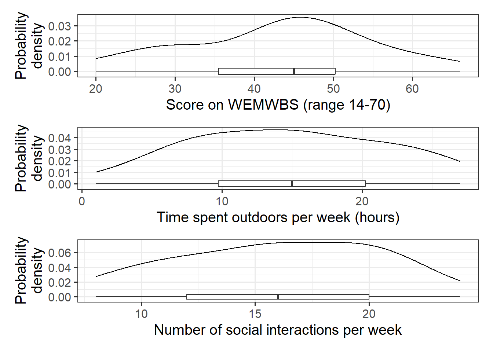
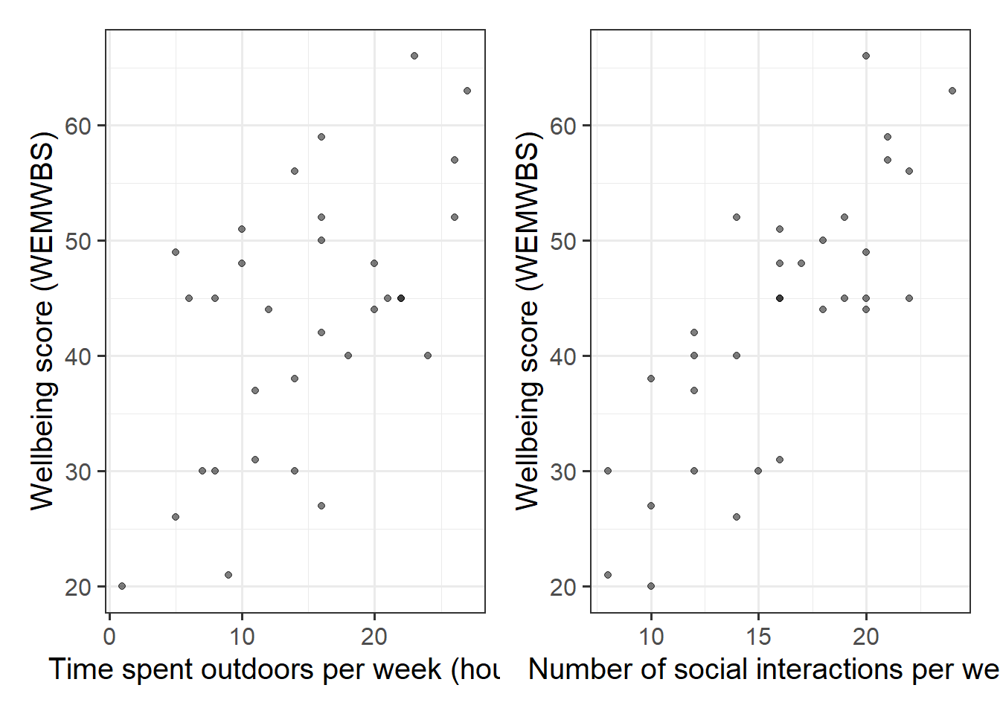
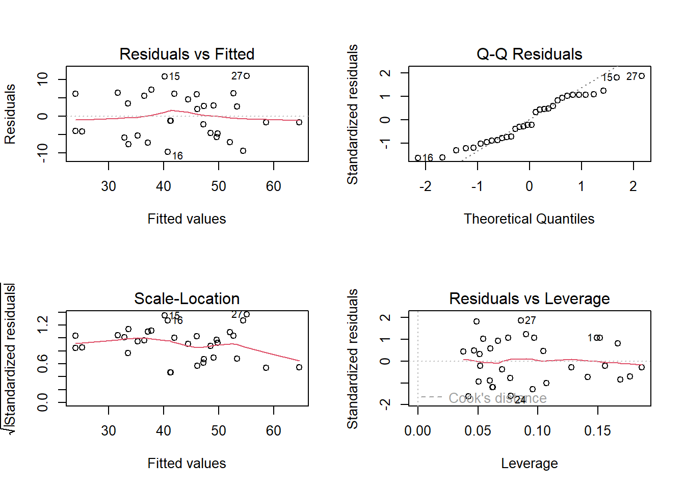
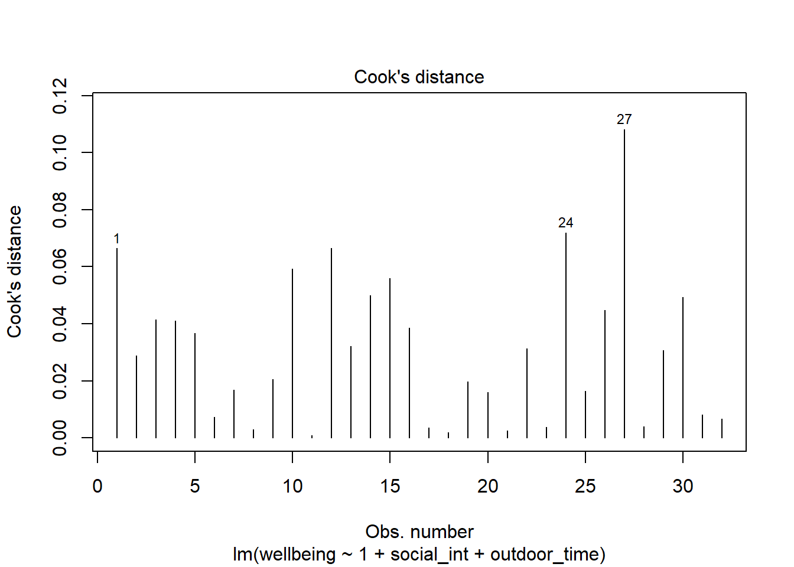
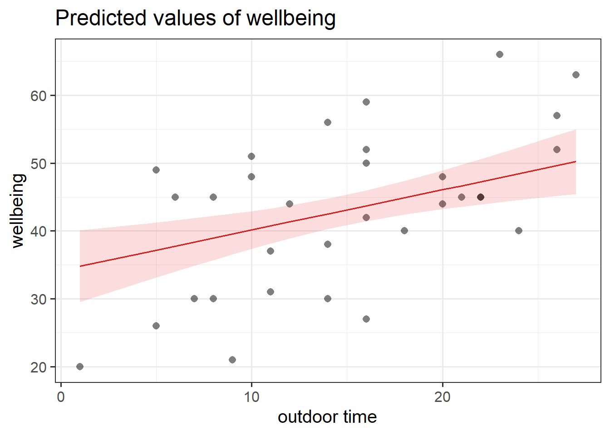
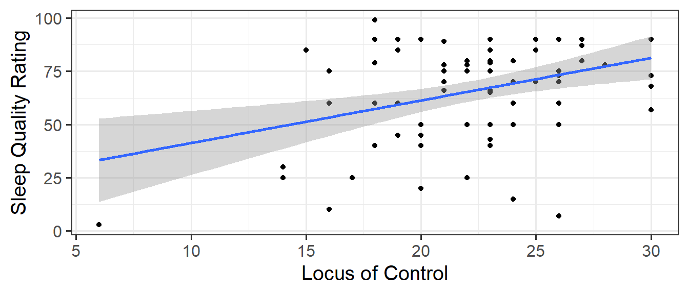
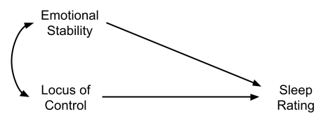
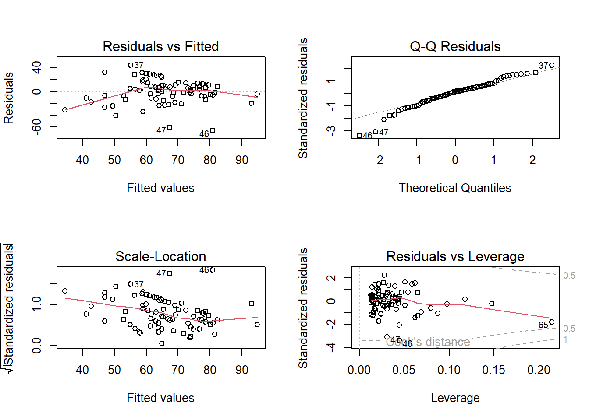

Research Question:after taking into account differences due to people’s level of social interactions, to what extent is well-being associated with the time people spend outdoors?
Data: wellbeing.csv
Researchers interviewed 32 participants, selected at random from the population of residents of Edinburgh & Lothians. They used the Warwick-Edinburgh Mental Wellbeing Scale (WEMWBS), a self-report measure of mental health and well-being. The scale is scored by summing responses to each item, with items answered on a 1 to 5 Likert scale. The minimum scale score is 14 and the maximum is 70.
The researchers also asked participants to estimate the average number of hours they spend outdoors each week, the average number of social interactions they have each week (whether on-line or in-person), and whether they believe that they stick to a routine throughout the week (Yes/No).
wellbeing: Warwick-Edinburgh Mental Wellbeing Scale (WEMWBS), a self-report measure of mental health and well-being. The scale is scored by summing responses to each item, with items answered on a 1 to 5 Likert scale. The minimum scale score is 14 and the maximum is 70.
outdoor_time: Self report estimated number of hours per week spent outdoors
social_int: Self report estimated number of social interactions per week (both online and in-person)
routine: Binary Yes/No response to the question “Do you follow a daily routine throughout the week?”
location: Location of primary residence (City, Suburb, Rural)
Question 1
Read in the data, and explore and describe the variables and relationships that are relevant to the research question.
Hints:
You might want to:
plot the marginal distributions (the distributions of each variable in the analysis without reference to the other variables)
plot the marginal relationships between the outcome variable and each of the explanatory variables.
make a quick correlation matrix of the variables which are to be used in the analysis, and write a short paragraph describing the relationships.
e.g. cor(data[,c(1:4)]) will give us a matrix of correlations between each pair of the first 4 variables in the data
Solution
library(tidyverse)library(patchwork) #used to arrange plotsmwdata <-read_csv("https://uoepsy.github.io/data/wellbeing.csv")wellbeing_plot <-ggplot(data = mwdata, aes(x = wellbeing)) +geom_density() +geom_boxplot(width =1/250) +labs(x ="Score on WEMWBS (range 14-70)", y ="Probability\ndensity")outdoortime_plot <-ggplot(data = mwdata, aes(x = outdoor_time)) +geom_density() +geom_boxplot(width =1/200) +labs(x ="Time spent outdoors per week (hours)", y ="Probability\ndensity")social_plot <-ggplot(data = mwdata, aes(x = social_int)) +geom_density() +geom_boxplot(width =1/150) +labs(x ="Number of social interactions per week", y ="Probability\ndensity")wellbeing_plot / outdoortime_plot / social_plot

Figure 1: Marginal distribution plots of wellbeing sores, weekly hours spent outdoors, and social interactions
The marginal distribution of scores on the WEMWBS is unimodal with a mean of approximately 43. There is variation in scores (SD = 11.7).
The marginal distribution of weekly hours spend outdoors is unimodal with a mean of approximately 14.8 hours. There is variation in outdoor time (SD = 6.9 hours).
The marginal distribution of numbers of social interactions per week is unimodal with a mean of approximately 16. There is variation in in numbers of social interactions per week (SD = 4.4).
wellbeing_outdoor <-ggplot(data = mwdata, aes(x = outdoor_time, y = wellbeing)) +geom_point(alpha =0.5) +labs(x ="Time spent outdoors per week (hours)", y ="Wellbeing score (WEMWBS)")wellbeing_social <-ggplot(data = mwdata, aes(x = social_int, y = wellbeing)) +geom_point(alpha =0.5) +labs(x ="Number of social interactions per week", y ="Wellbeing score (WEMWBS)")wellbeing_outdoor | wellbeing_social

Figure 2: Scatterplots displaying the relationships between scores on the WEMWBS and a) weekly outdoor time (hours), and b) weekly number of social interactions
We can either use:
# correlation matrix of the first 3 columnscor(mwdata[,1:3])
or:
# select only the columns we want by name, and pass this to cor()mwdata %>%select(wellbeing, outdoor_time, social_int) %>%cor()
There is a moderate, positive, linear relationship between weekly outdoor time and WEMWBS scores for the participants in the sample. Participants’ wellbeing scores tend to increase, on average, with the number of hours spent outdoors each week.
There is a moderate, positive, linear relationship between the weekly number of social interactions and WEMWBS scores for the participants in the sample. Participants’ wellbeing scores tend to increase, on average, with the weekly number of social interactions. There is also a weak positive correlation between weekly outdoor time and the weekly number of social interactions.
Question 2
Research Question:after taking into account differences due to people’s level of social interactions, to what extent is well-being associated with the time people spend outdoors?
Fit a regression model that you can use to answer the research question (make sure to give it a name to store it in your environment).
Call:
lm(formula = wellbeing ~ 1 + social_int + outdoor_time, data = mwdata)
Residuals:
Min 1Q Median 3Q Max
-9.742 -4.915 -1.255 5.628 10.936
Coefficients:
Estimate Std. Error t value Pr(>|t|)
(Intercept) 5.3704 4.3205 1.243 0.2238
social_int 1.8034 0.2691 6.702 2.37e-07 ***
outdoor_time 0.5924 0.1689 3.506 0.0015 **
---
Signif. codes: 0 '***' 0.001 '**' 0.01 '*' 0.05 '.' 0.1 ' ' 1
Residual standard error: 6.148 on 29 degrees of freedom
Multiple R-squared: 0.7404, Adjusted R-squared: 0.7224
F-statistic: 41.34 on 2 and 29 DF, p-value: 3.226e-09
\(\hat \beta_0\) = 5.37, the estimated average wellbeing score associated with zero hours of outdoor time and zero social interactions per week.
\(\hat \beta_1\) = 1.8, the estimated increase in average wellbeing score associated with an additional social interaction per week (an increase of one), holding weekly outdoor time constant (i.e., when the remaining explanatory variables are held at the same value or are fixed).
\(\hat \beta_2\) = 0.59, the estimated increase in average wellbeing score associated with one hour increase in weekly outdoor time, holding the number of social interactions constant.
Question 4
Along with the p-values given by summary() that test the null hypothesis that each coefficient is equal to zero, we can obtain confidence intervals for our estimates to provide a range of plausible values for each coefficient. This may be useful if we want to focus more on the estimated value, rather than “is it zero or not?”.
Look up the function confint() and use it to obtain some 95% Confidence Intervals for the coefficients.
The average wellbeing score for all those with zero hours of outdoor time and zero social interactions per week is between -3.47 and 14.21.
When holding weekly outdoor time constant, each increase of one social interaction per week is associated with a difference in wellbeing scores between 1.25 and 2.35, on average.
When holding the number of social interactions per week constant, each one hour increase in weekly outdoor time is associated with a difference in wellbeing scores between 0.25 and 0.94, on average.
Question 5
Does your model provide a better fit to the data than a model with no explanatory variables? (i.e., test against the alternative hypothesis that at least one of the explanatory variables significantly predicts wellbeing scores).
Hints:
it’s all in the summary()!!
this might not be a useful question to ask, but we’re just trying to go through what each bit of the model output shows.
Solution
summary(wbmodel)
Call:
lm(formula = wellbeing ~ 1 + social_int + outdoor_time, data = mwdata)
Residuals:
Min 1Q Median 3Q Max
-9.742 -4.915 -1.255 5.628 10.936
Coefficients:
Estimate Std. Error t value Pr(>|t|)
(Intercept) 5.3704 4.3205 1.243 0.2238
social_int 1.8034 0.2691 6.702 2.37e-07 ***
outdoor_time 0.5924 0.1689 3.506 0.0015 **
---
Signif. codes: 0 '***' 0.001 '**' 0.01 '*' 0.05 '.' 0.1 ' ' 1
Residual standard error: 6.148 on 29 degrees of freedom
Multiple R-squared: 0.7404, Adjusted R-squared: 0.7224
F-statistic: 41.34 on 2 and 29 DF, p-value: 3.226e-09
Weekly social interactions and outdoor time explained 72.2% of the variance (adjusted \(R^2\) =0.722, \(F\)(2,29)=41.3, p<.001)
Optional Question 6
Just to prove it to ourselves, conduct a model comparison between your model and the “null model”, and check that the \(F\)-statistic from the summary() of your model matches that from the comparison.
Hints:
we talked about the ‘null model’, and conducting model comparison in 8A#model-comparisons.
we can fit a model with no predictors such as lm(wellbeing ~ 1, data = mwdata).
Solution
nullmodel <-lm(wellbeing ~1, data = mwdata)anova(nullmodel, wbmodel)
Analysis of Variance Table
Model 1: wellbeing ~ 1
Model 2: wellbeing ~ 1 + social_int + outdoor_time
Res.Df RSS Df Sum of Sq F Pr(>F)
1 31 4222.0
2 29 1096.2 2 3125.8 41.345 3.226e-09 ***
---
Signif. codes: 0 '***' 0.001 '**' 0.01 '*' 0.05 '.' 0.1 ' ' 1
Matches that seen in the bottom of summary(wbmodel):
F-statistic: 41.34 on 2 and 29 DF, p-value: 3.226e-09
You don’t necessarily have to perform statistical tests of assumptions, but check the plots at the very least!
Interpreting these plots is ultimately a judgement call, and comes with experience.
Solution
We only have \(n=32\) observations here, so our plots might look a bit wobbly. I might perform some quick tests to reassure myself we’re okay.
plot(wbmodel)

shapiro.test(residuals(wbmodel))
Shapiro-Wilk normality test
data: residuals(wbmodel)
W = 0.94831, p-value = 0.129
library(car)ncvTest(wbmodel)
Non-constant Variance Score Test
Variance formula: ~ fitted.values
Chisquare = 0.001925809, Df = 1, p = 0.965
We seem to be okay!
Question 8
Check for influential observations.
Hints:
8B#individual-case-diagnostics covers a whole load of different metrics you might use. As a starting point, perhaps consider Cook’s Distances plots, or use influence.measures() to get lots of info.
Solution
Here are the Cook’s Distance values:
plot(wbmodel, which =4)

We can see that one observation (labelled 27) is a little bit higher than the rest. It’s not hugely out of keeping with the others, so I might not be too worried.
It’s not flagged by influence.measures(), but another observation is flagged, this time on the covratio metric (influence on the standard errors).
With only \(32\) observations, excluding datapoints comes with a big reduction in statistical power. On balance I might report this influential point in the write up, but keep it in the analysis. This decision is also based on the distribution of covratio values - it doesn’t look like one value is really that much higher than the others (it is simply above the internal cutoff that influence.measures() uses).
to visualise just one association, you might need the terms argument in plot_model(). Don’t forget you can look up the documentation by typing ?plot_model in the console.
Solution
library(sjPlot)plot_model(wbmodel, type ="eff",terms =c("outdoor_time"), show.data =TRUE)

Question 10
Create a regression table to present your results
Hints:
There is a useful function called tab_model(), also from the sjPlot package. You can see it used in 7A#example.
note, this is the survey data just from USMR this year, not other students on other courses or in previous years
Question 11
Recall that last week we discussed my little theory that people who believe they have more control over life will rate their sleep quality as being better.

Figure 3: linear model predicting sleep quality ratings by perceived locus of control
Monica has pointed out that it’s likely that the association we have found (Figure 3) might be due to other things. There are lots of explanations we could come up with. Some of these might involve variables we have measured.1 What if the relationship we see between peoples’ loc and sleeprating is better explained by their emotional stability? Monica makes a convincing argument that having higher emotional stability may be correlated with feeling more in control of one’s life, and may also influence sleep quality.
Sometimes it can help to think of models in the form of diagrams:

Figure 4: Monica’s suggestion, where emotional stability and locus of control are correlated (indicated by double headed arrow), and both influence sleep quality (indicated by single headed arrows)
Monica tells me that if I want to look at how ‘locus of control’ is associated with sleep quality, it would be more useful to think about the association after controlling for emotional stability.
How does locus of control (loc) influence sleep quality (sleeprating) after accounting for emotional stability (emot_stability)?
the way the question is phrased suggests that sleeprating is our outcome (the thing being explained/influenced/predicted); loc is the focal predictor (the main predictor of interest); and emot_stability is a covariate. we treat “covariates” and “focal predictors” exactly the same in the model: lm(outcome ~ covariates and focal predictors), it is just terminology that we use to distinguish what we are interested in from what we want to acknowledge as being theoretically relevant.
Don’t worry about assumptions, we’ll take a look at them next.
Call:
lm(formula = sleeprating ~ emot_stability + loc, data = usmrdata)
Residuals:
Min 1Q Median 3Q Max
-65.886 -9.772 2.162 10.671 43.887
Coefficients:
Estimate Std. Error t value Pr(>|t|)
(Intercept) 9.5850 12.9005 0.743 0.45978
emot_stability 0.9083 0.2695 3.370 0.00118 **
loc 1.4192 0.5740 2.472 0.01565 *
---
Signif. codes: 0 '***' 0.001 '**' 0.01 '*' 0.05 '.' 0.1 ' ' 1
Residual standard error: 19.91 on 76 degrees of freedom
(1 observation deleted due to missingness)
Multiple R-squared: 0.2454, Adjusted R-squared: 0.2255
F-statistic: 12.36 on 2 and 76 DF, p-value: 2.256e-05
Question 12
Monica and I want to write up our study of how locus of control is associated with sleep ratings.
However, we haven’t checked any of our model assumptions, and so we shouldn’t really trust the p-values we have been looking at so far.
Take a look at the assumptions and diagnostics of your model. If your assumptions are worryingly weird, there are things that may be useful to consider doing. We would probably recommend bootstrapping (see 8B#back-to-the-bootstrap).
Hints:
You can ask yourself one of two questions (or both if you like), but we recommend the visualisation approach:
It’s also worth taking a look at the ‘diagnostics’ (such as the influence of individual cases, see 8B#individual-case-diagnostics.
In order to bootstrap, you might need to fit the model to a dataset without any NAs in it.
Solution
Let’s have a little look at assumption plots:
plot(sleeplocmod2)

None of these plots look great to me.
The “residuals vs fitted” shows a curved line rather than a horizontal line at 0
The “normal QQ” plot looks okay apart from a couple of points that are dragging it down at the bottom.
The “scale-location” plot indicates the variance of residuals changes across the fitted values (the red line isn’t horizontal).
The “residuals vs leverage” plot shows a few points might be quite influential. However, they are within the bounds of the cook’s distance thresholds (the dotted lines).
note that some of these points, the 46th and 47th observations, are the same as the ones pulling down the QQplot..
Let’s take a look at if we have some people who are too influential:
According to cooks distance, all of these are fine (no stars next to the cook.d column values). However, observations 46, 47 and 65 all have fairly large values for some of the DFbeta - suggesting they have fairly large influence (relative to the other observations) on our coefficients.
Let’s perform a bootstrap, which means we can relax our assumptions about the distribution of the residuals.
To do so, we need to get a dataset with only complete cases:
Monica convinces me that we have theoretical motivation for thinking that sleeprating is influenced by both emotional stability and locus of control.
Tia is curious if other aspects of personality influence sleep quality ratings. She knows that we measured 5 personality traits: emotional stability, imagination, extraversion, agreeableness, and conscientiousness.
Tia asks us:
Over and above the influence of locus of control and emotional stability, are other personality traits important predictors of how sleep quality is rated?
Hints:
This question asks about the explanatory power of a set of predictors. The best way to test this might be model comparison (see 8A#model-comparisons)
To compare two models, the models need to be fitted to the same data. However, when we fit a model using lm(), rows where there is missing data for any of the variables in the model will be excluded.
if we have a model mod1 <- lm(y ~ x1) and we compare it to mod2 <- lm(y ~ x1 + x2), if there is missing data on x2, then mod2 will be fitted to a smaller set of the data.
a good approach is to make a separate object in your environment which is the data you want to model.
# select all variables included in either model, and omit the NAsmoddata <- data %>%select(y, x1, x2) %>% na.omit# these two models will now be fitted to the same datamod1 <-lm(y ~ x1, moddata)mod2 <-lm(y ~ x1 + x2, moddata)# meaning we can compare them:anova(mod1, mod2)
Solution
Make a dataset with the complete cases on relevant variables:
Analysis of Variance Table
Model 1: sleeprating ~ emot_stability + loc
Model 2: sleeprating ~ emot_stability + loc + extraversion + agreeableness +
conscientiousness + imagination
Res.Df RSS Df Sum of Sq F Pr(>F)
1 75 29996
2 71 26889 4 3107.3 2.0512 0.09638 .
---
Signif. codes: 0 '***' 0.001 '**' 0.01 '*' 0.05 '.' 0.1 ' ' 1
RMarkdown
Question 14
Create an RMarkdown document that presents and describes analyses that addresses the research questions below, and then presents and interprets the results.
Research Questions
After accounting for emotional stability, how is perceived control over one’s life associated with quality of sleep?
In addition to the associations studied above, are other personality traits associated with differences in sleep quality?
Hints:
You’ve done the modelling already in the last couple of questions, so this just a matter of writing, interpreting, and presenting!
This is Eleanor Abernathy. She has been learning about astrology and horoscopes, but is still skeptical. She wants to know if, after accounting for differences between cat/dog people, a person’s month-of-birth is associated with how conscientious they are.
Using the same USMR 2022 survey data, fit the a model and use it to address the following research question:
After accounting for differences between cat/dog people, is month-of-birth associated with conscientiousness?
Hint:
Note that the question is more a matter of “is”/“does”, and not “what is”/“how does”.
To answer this question, we might be more inclined to analyse the variance in conscientiousness explained by birth-months (rather than looking at specific differences) - see 8A#analysis-of-variance.
This is because it is testing the specific difference between September and April (the reference level). Taken alone, this is a significant difference. But considered all together, the month-level differences in conscientiousness aren’t significant enough to improve over what we’d expect from 12 random groupings.
When designing a study/collected data, it’s good practice to do this sort of thinking before hand, to make sure you measure all the things you want to measure↩︎